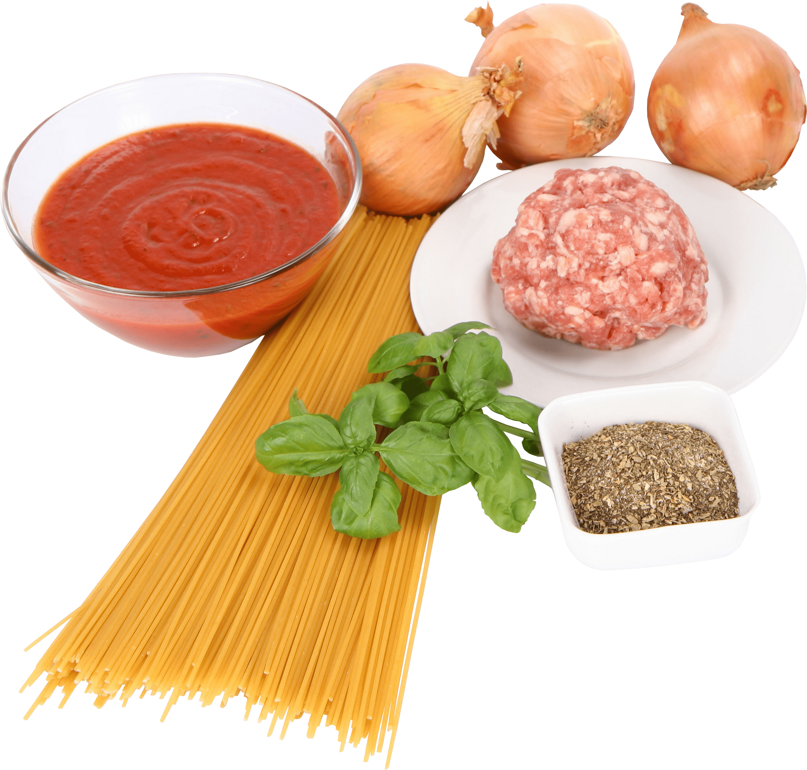

Pastafy
Solving fun pasta problems with machine learning!

The Pastafy team is hard at work to deliver the finest pasta centric machine learning solutions. We are still in early development stages, our project can be found here:
https://github.com/pastafy/pastafyapp
What does pastafy do?
Have you ever made a pasta sauce, but were uncertain of which pasta shape to use with it? Do you sometimes need suggestions of what ingredients to add to your pasta sauce? These are exactly the kinds of problems that we at Pastafy aim to solve...
Input an ingredient, or a few ingredfients seperated by commas and our pastabot model will return suggested ingredients and pasta shapes for your meal.
3/8/2020